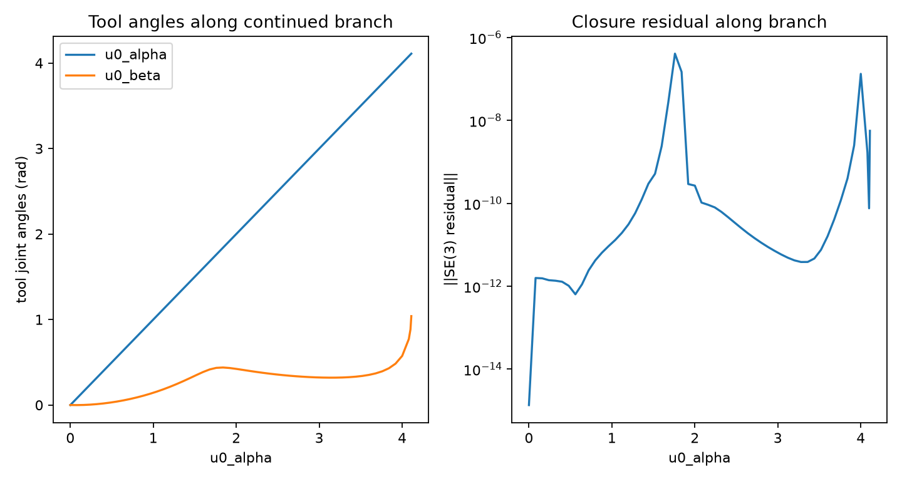

PHYSICAL GEOMETRY CLOSURE / WINDING NOT COMPUTED YET (V04).
Sprint V03 solves an SE(3) loop-closure residual on V02B physical UUUR assemblies and continues a one-DOF branch in the selected tool-axis coordinate. Labels below are provisional continuation outcomes, not true winding-based crank/rocker classifications.

| Sample | Case | Free parameter | Samples | Closed | Singularities | Notes |
|---|---|---|---|---|---|---|
| uuur_physical_000 | uuur_tool_a | u0_alpha | 54 | False | 0 | closure_continuation_v03, winding_pending_v04, free_parameter=u0_alpha, corrector_failed |
| uuur_physical_000 | uuur_tool_b | u0_beta | 8 | False | 0 | closure_continuation_v03, winding_pending_v04, free_parameter=u0_beta, corrector_failed |
| uuur_physical_001 | uuur_tool_a | u0_alpha | 79 | True | 0 | closure_continuation_v03, winding_pending_v04, free_parameter=u0_alpha, free_parameter_period, provisional_label_pending_true_winding_v04 |
| uuur_physical_001 | uuur_tool_b | u0_beta | 10 | False | 0 | closure_continuation_v03, winding_pending_v04, free_parameter=u0_beta, corrector_failed |
| Sample | Case | Closed | Singularities | Class | range_alpha | range_beta | Notes |
|---|---|---|---|---|---|---|---|
| uuur_physical_000 | uuur_tool_a | False | 0 | open_branch | 4.110 | 1.041 | closure_continuation_v03, winding_pending_v04, free_parameter=u0_alpha, corrector_failed |
| uuur_physical_000 | uuur_tool_b | False | 0 | open_branch | 1.732 | 0.430 | closure_continuation_v03, winding_pending_v04, free_parameter=u0_beta, corrector_failed |
| uuur_physical_001 | uuur_tool_a | True | 0 | rocker | 6.240 | 0.770 | closure_continuation_v03, winding_pending_v04, free_parameter=u0_alpha, free_parameter_period, provisional_label_pending_true_winding_v04 |
| uuur_physical_001 | uuur_tool_b | False | 0 | open_branch | 1.539 | 0.600 | closure_continuation_v03, winding_pending_v04, free_parameter=u0_beta, corrector_failed |